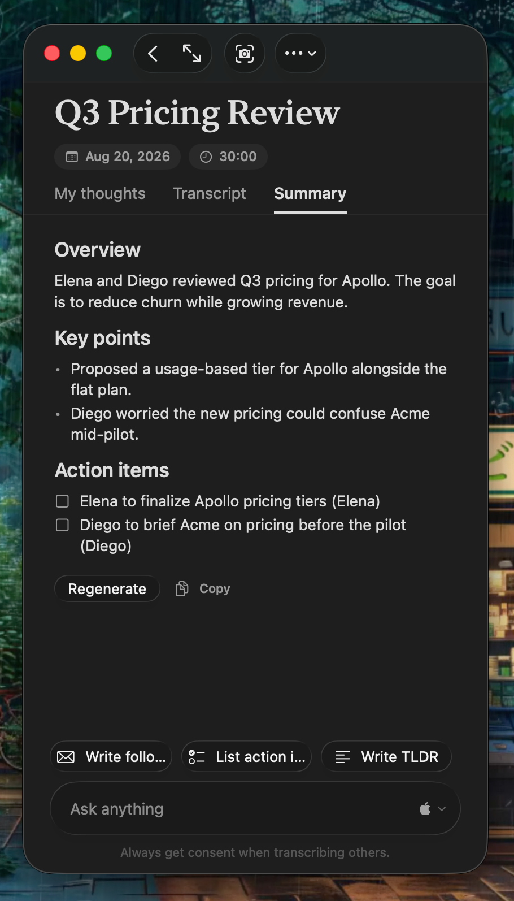

Everything connects in one graph
People, projects, and topics from every meeting are linked into one local memory you can explore and search.
Learn about the knowledge graph →

Action items file themselves
Every commitment in the conversation lands in one list, tied back to the meeting it came from.
Learn about action items →

It sits on the side of your call
Shrink Oats to a slim column docked next to the meeting. The transcript, your thoughts, and the summary stay one click away.
Learn about recording →

Your notes are plain files
Every meeting is a folder on your disk. Grep it, sync it, back it up. Nothing is locked in.
Learn about your data →
meta.jsontitle, date, durationtranscript.jsonlevery line, with speakernote.mdyour own notessummary.mdthe generated summaryaudio.m4athe recordingassets/screen captures